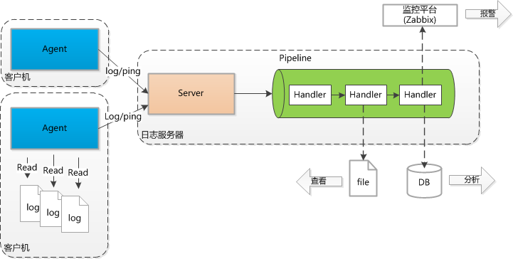

JBoss.orgCommunity Documentation
Log Monitor的整体架构如下；

客户机上部署Agent，以Windows Service方式运行，通过多个线程监视日志文件，并增量将日志内容发送给Server。
可以对日志内容设置过滤，典型的按照正则表达式方式对日志行文本进行过滤，并且对日志文件进行分割，因为像Java堆栈等是换行的。
客户机会通过心跳线程向服务器发送ping信息，服务器可以根据此来感知客户机的运行情况。
客户机和服务器之间通过高效的Netty（TCP）协议进行传输。
Server部署在多个日志服务器上，以Windows Service方式运行。一个Server可以处理Agent发送的请求。
Server通过流水线（Pipeline）对日志进行分析处理，每个处理器（Handler）完成一项任务。处理器是完全可定制的。
典型的日志处理经过切分、过滤、存储、统计等一系列过程。
将原始的日志文本（RawLog）按照特定的分割符切分，比如Log4j格式或者HTTP Access log格式等。
有些信息需要通过二次切分获得，例如性能日志，将切分后的日志（TokenLog）进行二次切分得到性能日志格式（PerfLog）。